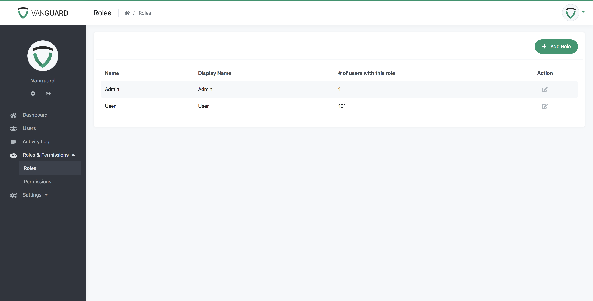
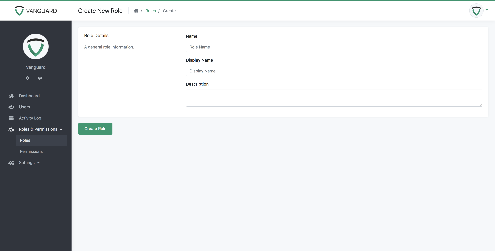
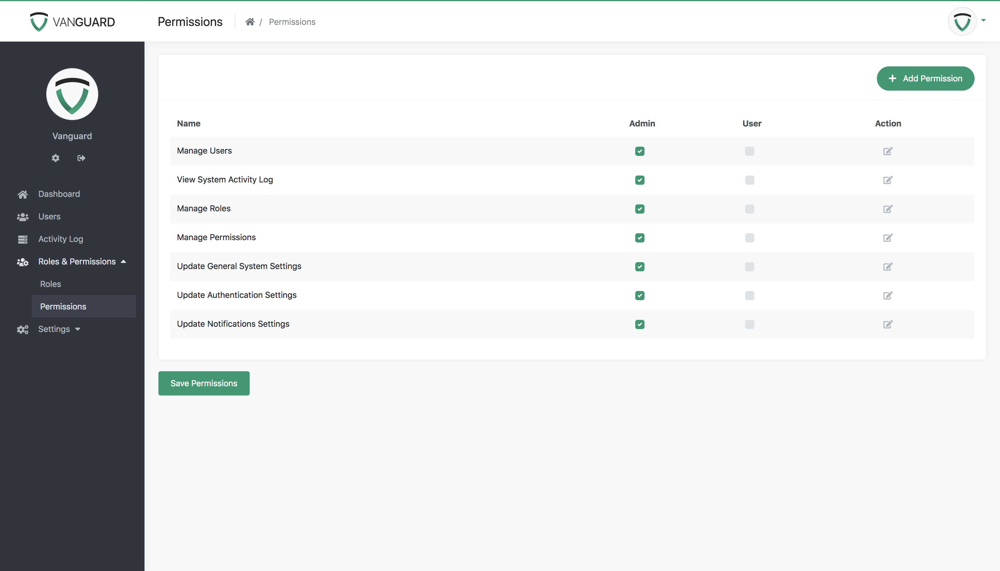
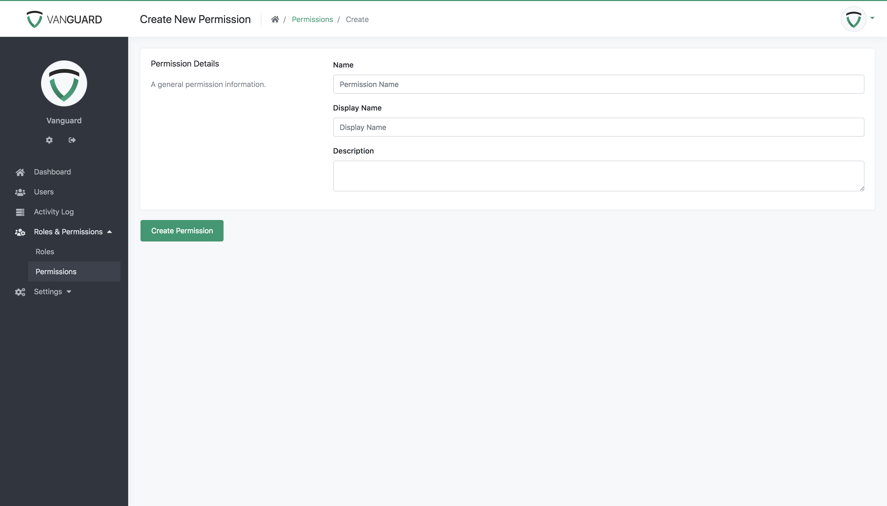

Roles And Permissions
Roles and Permissions
Vanguard comes with advanced roles and permissions mechanism which allows you to easily manage your available roles and permissions via Web UI. System is created to allow users to have only one role, and to allow different permissions for each role.
Available System Roles
On roles section of the website administrators (or other users with appropriate permissions) can see and manage available system roles, as well as add unlimited number of new roles. Page with default system roles (Admin and User) is provided below.

Managing Roles
As it was already mentioned, users with appropriate permissions can add unlimited number of roles, and use them to customise the application. More on that can be found in working with permissions section.
Form for adding new role, and editing existing roles, is provided below.

Every role has name, that is used as key inside the source code of application. Display name is used inside the UI to better explain who is this role referring to.
System Permissions
Permissions represent some concrete actions that specific role can perform. For example, one of default permissions is users.manage, and every user with role which has this permission can manage system users.
This means that, for example, you can create new system role called Manager, and allow managers to only edit system users, without them being able to update system settings etc.
Note! Default system permissions cannot be deleted from UI. Custom created permissions can be deleted without any problem.
Managing Permissions
List of available permissions, including available system roles and their permissions, is provided below.

If we want, for example, to allow system users with role User to be able to View System Activity Log, all we have to do is to check the corresponding checkbox for that role, and click Save Permissions button at the bottom of the page. After that all users will be able to see Activity Log in sidebar menu as well as to access the activity log for all system users.
Vanguard support unlimited number of permissions, and they can be added via form provided below.

Permission name is used as key/constant inside the source code to check if user has permissions to perform some action (more on that inside custom registration form example), and display name is used inside the UI, to better explain what the permission is used for.